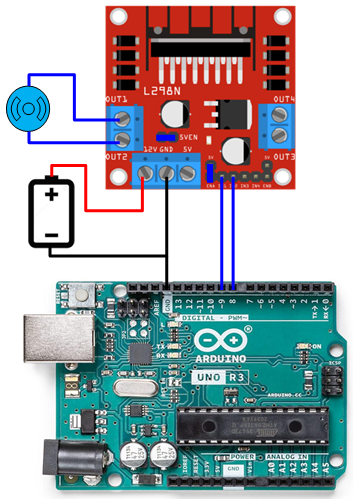
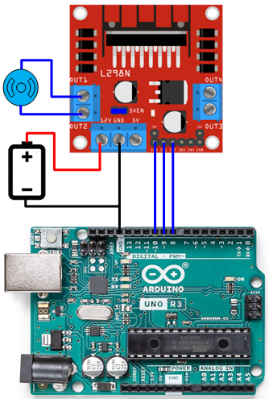
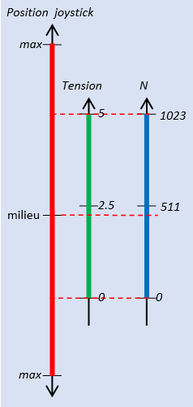
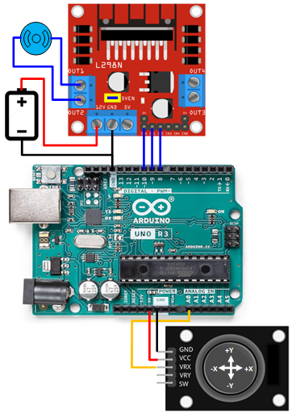

Moteur CC
Introduction
- Un moteur CC (Courant Continu) ou DC (Direct Currant) doit être alimenté avec une alimentation continue (Batterie)
- Le sens de rotation dépend de la polarité de la batterie. Si on inverse la polarité, le moteur tourne dans l'autre sens
Commande Marche/Arrêt
Si on contrôle le moteur à l'aide d'un commutateur électronique comme un transistor bipolaire ou un transistor MOS, il faut garder à l'esprit que le moteur est une charge inductive. A chaque coupure du courant il génère une surtension qui peut atteindre des centaines de Volts et détruire le transistor. Pour protéger le transistor il faut absolument ajouter une diode de récupération
Contrôle de vitesse
La commande de vitesse d'un moteur à courant continu (DC) se fait principalement par la modulation de la largeur d'impulsion (PWM, pour Pulse Width Modulation). Au lieu d'alimenter le moteur d'une manière permanente, on l'alimente a travers un commutateur commandé par un signal PWM.
Le signal PWM est caractérisé par une période fixe T. En faisant varier la largeur de l'impulsion active H au sein de cette période, on modifie le rapport cyclique, c'est-à-dire le ratio H/T. Ce rapport cyclique détermine la proportion de temps durant laquelle la tension est appliquée au moteur, influençant ainsi la puissance moyenne fournie et, par conséquent, la vitesse du moteur. Lorsque H est augmenté, le rapport cyclique augmente, ce qui accroît la vitesse du moteur. À l'inverse, en réduisant H, on diminue la vitesse
Contrôler le sens de rotation
Pour contrôler le sens de rotation du moteur, on le commande à l'aide d'un pont en H.
Un pont en H est tout simplement un ensemble de 4 interrupteurs. Si on ferme A et D, le moteur est alimenté dans un sens. Si on ferme B et C, le moteur est alimenté dans l'autre sens
Le pont en H L298
Le circuit:
Le circuit L298 fabriqué par STMicroelectronics contient deux ponts en H ce qui permet de contrôler deux moteurs à courant continu ou un moteur pas à pas bipolaire.
Table de vérité:
Contrôle de vitesse:
Conformément à la table de vérité, si on applique un '1' (5V permanent) sur l'entré ENA (ou ENB), le moteur tourne à sa vitesse nominale
Pour controler la vitesse, on applique un signal PWM sur l'entrée ENA (ou ENB), La vitesse de rotation sera proportionnelle au rapport cyclique du signal PWM. La fréquence du signal PWM ne devrait pas être trop élevée, une valeur entre 60Hz et 500Hz me parait optimale. Voir Ce paragraphe pour savoir comment modifier la fréquence
Branchement:
Le branchement du L298 avec un seul Moteur est indiqué ci-dessous :
On y trouve :
- Une alimentation 5V qui alimente les circuits logiques du L298
- Une alimentation allant de 4,5V à 46V pour alimenter le moteur. Il faut toujours prévoir 2Volts de plus que la tension nominale du moteur à cause de la chute de tension dans les transistors. Par exemple, si on a un moteur 12V, il faut prendre une alimentation de 14Volts
- Quatres diiodes de récupération
- Des condensateurs de filtrage
Le Module:
Le module L298 disponible dans le commerce a l'avantage d'être tout équipé et prêt à l'emploi. Il intègre :
- Un circuit L298 monté sur radiateur,
- Des bornier à vis pour faciliter le branchement des moteurs et des alimentations,
- 8 diodes de protection, 4 pour chaque pont,
- Un jumper qui permet d'alimenter un régulateur qui fabrique l'alimentation 5V à partir de l'alimentation du moteur,
- Les entrée de contrôle (IN1, In2, ENA) du pont A et (IN3, In4, ENB) du pont B
- Deux Jumpers qui permettent si on le désire de relier les broches ENA et ENB à 5V
- Des condensateurs et une LED
Exemple 1: Vitesse fixe
Dans cet exemple, on a un seul moteur branché sur le pont A
- On contrôle le sens de rotation à l'aides des broches IN1 et IN2
- La broche ENA est validée en permanence à l'aide de son jumper (ou reliée à 5V), le moteur tournera à sa vitesse max
- La source d'alimentation du moteur doit tenir compte de la chute de tension voisine de 2Volts perdue dans le pont
- Le jumper 5V est en place, l'alim 5V est produite localement à partie de l'alimentation du moteur
- On envoie des commandes à partir du moniteur série:
- F ou f ==> Rotation avant (Forward)
- B ou b ==> Rotation Arrière (Backward)
- S ou s ==> Arrêt (Stop)

Exemple 2: Vitesse Variable
Dans cet exemple, on a un seul moteur branché sur le pont A
- On contrôle le sens de rotation à l'aides des broches IN1 et IN2
- On contrôle la vitesse en appliquant un signal PWM sur la broche ENA. (enlever le jumper)
- La source d'alimentation du moteur doit tenir compte de la chute de tension voisine de 2Volts perdue dans le pont
- Le jumper 5V est en place, l'alim 5V est produite localement à partie de l'alimentation du moteur
- On envoie des commandes à partir du moniteur série. La commande est constituée d'un caractère
majuscule ou minuscule (F, B, ou S)
suivi d'un nombre N. Le caractère définit le sens de rotation, le nombre N (de 0 à 255)
représente le
paramètre de la fonction analogWrite() qui défini le rapport cyclique N/255 du
signal PWM. Par exemple :
- f 255 ==> Rotation avant, vitesse max
- F 50 ==> Rotation avant, vitesse faible
- B 127 ==> Rotation Arrière, vitesse médiane
- F 0 ou B 0 ==> Roue Libre
- S ou s ==> Arrêt (Stop)
- On va utiliser la fonction Serial.parseInt() pour lire le paramètre N. Cette fonction laisse le retour à ligne de la commande '\r' '\n' dans le buffer de réception, d'où la nécessité de vider le buffer à chaque fois

#define ENA 10
#define IN1 9
#define IN2 8
void setup() {
TCCR1B = TCCR1B & B11111000 | B00000100; // f = 122.55 Hz, T = 8.16ms (D9, D10)
pinMode(IN1, OUTPUT);
pinMode(IN2, OUTPUT);
analogWrite(ENA,0);
Serial.begin(9600);
Serial.setTimeout(5000);
Serial.println(F("F N --> Forward (Avant), vitesse ~ N/255"));
Serial.println(F("B N --> Backward (Arrière), vitesse ~ N/255"));
Serial.println(F("S --> Stop (Arrêt)"));
Serial.println("Le moniteur Série doit envoyer un Fin de Ligne");
}
void loop() {
if (Serial.available()) {
char c = toupper(Serial.read());
if(c == 'S'){
digitalWrite(IN1, LOW);
digitalWrite(IN2, LOW);
return;
}
uint8_t N = Serial.parseInt();
clearInputBuffer();
Serial.println(String(c)+" --> "+String(N));
if (c == 'F') {
digitalWrite(IN1, HIGH);
digitalWrite(IN2, LOW); // gauche
analogWrite(ENA,N);
} else if (c == 'B') {
digitalWrite(IN1, LOW);
digitalWrite(IN2, HIGH);
analogWrite(ENA,N);
} else {
Serial.println(String(c)+" ---> Bad Command ");
}
}
}
void clearInputBuffer() {
do {
delay(2);
Serial.read();
} while (Serial.available());
}
Exemple 3: Commande par un Joystick

Dans cet exemple, on va controller un moteur CC à l'aide d'un Joystick
- Le joystick est constitué de deux potentiomètres Px et Py,
- Quand on bouge le joystick dans l'axe X, il fait tourner le potentiomètre Px
- Quand on bouge le joystick dans l'axe Y, il fait tourner le potentiomètre Py
- Si on branche le potentiomètre entre la masse et 5Volts, les deux tensions de sorties VRX et VRY (points milieux) vont varier entre 0 Volts et 5 Volts
- Si on applique une sortie (VRX ou VRY) à une entrée analogique du Arduino et on lit sa valeur avec la fonction analogRead() on obtient une valeurs comprise entre 0 et 1023 
- Les premiers tests montrent que le joystick n'est pas parfait:
- Il n'est pas centré, à la position médiane, il ne délivre pas 2.5V,
- Les limites 0v d'un coté et 5V de l'autre sont atteintes bien avant que la position du joystick ne soit arrivée au maximum,
- Il semble que la tension obtenue sur la sortie du joystick (VRX ou VRY) ne varie pas linéairement avec les déplacements du potentiomètre: Un déplacement ΔP du joystick ne produit pas toujours la même variation de tension ΔV,
- Il faudra donc adapter les programmes à ces considérations.
- Pour notre exemple, on va faire simple. On va partager l'excursion (de chaque coté en trois
plages):
- Quand le joystick est au repos (position médiane), la valeur lue sur Arduino est voisine de 500. On va réserver une plage autour de cette valeur et l'affecter à l'action: Arrêt
- Quand on pousse un peu le Joystick, on va arriver dans une nouvelle plage que nous allons affecter à une rotation Vitesse Faible
- Quand on pousse le Joystick, on va arriver dans une nouvelle plage que nous allons affecter à une rotation Vitesse Forte
- On peut par exemple essayer les plages suivantes et les adapter ensuite après utilisation
[900→1023] ==> Rotation avant, Vitesse Forte [600→900] ==> Rotation avant, Vitesse Faible [400→600] ==> Arrêt [100→400] ==> Rotation arrière, Vitesse Faible [0 → 100] ==> Rotation arrière, Vitesse Forte

/*
0 100 400 600 900 1023
|Ariere fort|---arrière faible---|-----Arrêt-----|---Avant faible---|-Avant fort-|
Moteur branché sur pont A du L298
Joystick sur A0
*/
#define ENA 10
#define IN1 9
#define IN2 8
#define PWML 100 // vitesse faible
#define PWMH 255 // vitesse forte
#define N1 100 // modifier les paliers si nécessaire
#define N2 400
#define N3 600
#define N4 900
void setup() {
TCCR1B = TCCR1B & B11111000 | B00000100; // f = 122.55 Hz, T = 8.16ms (D9, D10)
pinMode(IN1, OUTPUT);
pinMode(IN2, OUTPUT);
}
void loop() {
delay(10);
int N = analogRead(A0);
if (N < N1) {
digitalWrite(IN1, LOW);
digitalWrite(IN2, HIGH);
analogWrite(ENA, PWMH); // arrière Fort
} else if (N < N2) {
digitalWrite(IN1, LOW);
digitalWrite(IN2, HIGH);
analogWrite(ENA, PWML); // arrière Faible
} else if (N < N3)analogWrite(ENA, 0); // Roue libre
else if (N < N4) {
digitalWrite(IN1, HIGH);
digitalWrite(IN2, LOW);
analogWrite(ENA, PWML); // Avant faible
}
else {
digitalWrite(IN1, HIGH);
digitalWrite(IN2, LOW);
analogWrite(ENA, PWMH); // Avant fort
}
}